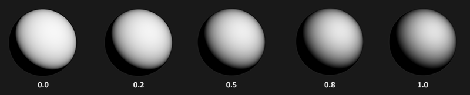
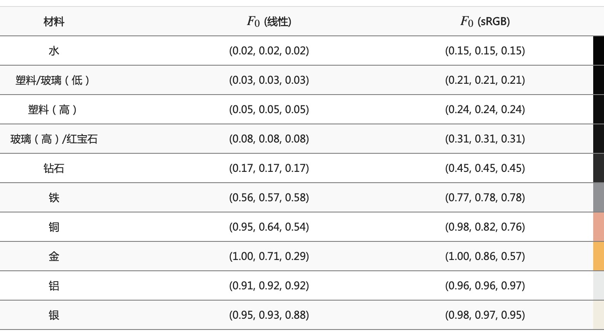
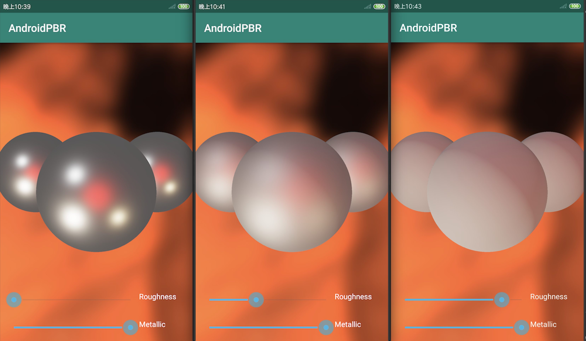

从本个世代起，基于物理的渲染（Physically Based Rendering，简称PBR）基本上就成为了事实上当下3A大作的渲染标准，自从迪士尼在在SIGGRAPH 2012上提出的著名的“迪士尼原则的BRDF”以及基于金属工作流来实现的方案，由于高度的易用性，美术设计师可以根据现实物理的参数来构建表面材质，可以实现惊人的显示效果，目前已经被广泛的在业界中使用
这篇文章将会尝试在Android中基于Kotlin来实现PBR管线，在正式开始代码实现之前，我们先来讨论下PBR管线的基础理论。
Before PBR
首先我们来看看，在PBR出现之前，传统的Blinn-Phong光照是怎么做的，我们先来看看渲染方程：
我们可以看到，光照颜色的输出，主要有两部分构成，漫反射项以及高光项，在渲染方程中：
-
\(Diffuse\)是漫反射颜色
-
\(Specular\)是高光颜色，或者叫做镜面反射的颜色
-
\(N\cdot L\) 是表面法向量跟光线方向向量的点乘
-
\(N\cdot H\) 是表面法向量跟半程向量（光线方向向量跟视角向量的中间向量）的点乘
-
\(shiness\)是高光度的反光度参数，值越大，高光点越集中
这个是经典的Blinn-Phong光照模型的，除了这个基本公式以外，后续也有针对这个模型一些改进项，使其更加符合物理上的直觉效果
这个光照模型并不复杂，但终究并非基于真实的物理参数进行材质的构建，实际渲染的时候往往得不到令人信服的效果。
PBR基础理论
接下来，我们再来介绍PBR的基础理论，以下内容以及图片参考自：PBR理论
微平面模型
所有的PBR理论都基于一种叫做微平面模型的理论，这个理论认为在微观尺度上，所有物体的表面都可以使用所谓的微平面（Microfacets）的细小镜面来进行描述，根据表面粗糙度的不同，这些微平面的排列可以相当不一致：
因此，这些微平面的排列则极大的影响了光线的反射：
因此，粗糙度越高的表面，表面光线反射越分散，反之则越集中：

在实际的PBR实现中，粗糙度（Roughness）是用来调整PBR效果的一个重要参数之一
能量守恒
在PBR中，能量守恒定律认为，出射的光线能量，永远不能超过入射光线的能量。在微平面模型中，对于一束光进入到进入到物体表面之后，我们分成了几个部分：
-
折射部分，指的是被吸收到物体表面的那部分光线能量，具体表现出来就是物体的漫反射（Diffuse）
-
反射部分，指的是光线反射出来离开物体表面的那部分光照，具体指的就是镜面高光（Specular）
对于非金属物质来说，光线射进物体都会产生折射跟反射部分，而对于金属物质来说，微平面理论认为金属表面不会显示出漫反射部分，所有光线都会被处理成镜面高光
而能量守恒的要求，则是要求漫反射+高光部分占比加起来为1，实际实现中，我们往往先算出高光部分占比，然后在算出漫反射部分占比：
float kS = calculateSpecularComponent(); // 反射/镜面 部分
float kD = 1.0 - ks; // 折射/漫反射 部分
对比传统的Blinn-Phong模型，由于起没有考虑能量守恒，所以往往很难得出令人信服的效果
基于物理的BRDF
BRDF（Bidirectional Reflectance Distribution Function），即为双向反射分布函数，是整个PBR管线中最为重要的函数之一，可以用来求出每条光线对了一个给定材质属性的表面上，最终反射出来的光线的贡献程度。类比Blinn-Phong模型来说，我们拿漫反射项颜色乘以NdotL，其实也是一种BRDF计算方式，只是没有基于物理理论来建模，所以没有办法得出令人信服的效果。
类似Blinn-Phong模型，PBR的BRDF也是接受入射光方向Wi，反射光方向Wo，以及一个跟微平面理论相关的物理参数粗糙度（Roughness），实际实现中，最为常用的则是被称为Cook-Torrance的BRDF模型，同时兼具漫反射以及镜面反射两部分：
- 其中Kd表示漫反射光照的能量占比，Ks则表示镜面反射的能量占比，两项加起来为1，而对于漫反射中的Lambert项，我们经常用这个公式计算：
我们将漫反射颜色除以PI，作为BRDF公式的漫反射部分。这部分并没有什么特别的，实际上在Blinn-Phong模型的改进版本中，也有将漫反射颜色除以PI的做法，用于得到更加真实的效果
- 而BRDF公式的镜面高光部分则比较复杂：
这里包含了三个主要的参数，D/F/G分别代表三种不同种类的函数，分别用来模拟反射的不同部分的特性，分母则为一个配平参数用来作为标准化因子。D/F/G三个函数则分别为：
- 法线分布函数（Normal Distribution Function）：用于估算在收到表面粗糙度的影响下，取向方向与半程向量一致的微平面向量
- 几何函数（Geometry Function）：用于描述微平面自成阴影的的函数，在表面粗糙度比较大的时候，平面上的微表面可能挡住了其他微表面的光线
- 菲涅尔方程（Fresnel Rquation）：用于描述光线在不同的入射角度下表面反射光线所占的比率
以上每一种函数都描述了对应不同的物理现象，而实际渲染中，我们都会采用某种近似的函数，接下来我们来说下这几种近似函数的公式：
BRDF近似项计算
这里BRDF近似项的选择，同样参照自：PBR理论
法线分布函数（Normal Distribution Function）的近似
法线分布函数从统计学的角度，描述了微平面模型对半程向量H的扰动程度，如果说给定H向量，NDF返回0.35，我们就认为整个平面中有35%的H向量与给定的向量一致，NDF的返回受表面粗糙度的影响，不同NDF的返回对镜面高光的区域影响很大：
可以看到到NDF返回值越小，镜面高光区域越小
实际渲染中，我们所使用的NDF方程为Trowbridge-Reitz GGX分布：
这里参数a取为粗糙度的平方
使用glsl的实现则如下：
float DistributionGGX(vec3 N, vec3 H, float roughness)
{
float a = roughness*roughness;
float a2 = a*a;
float NdotH = max(dot(N, H), 0.0);
float NdotH2 = NdotH*NdotH;
float nom = a2;
float denom = (NdotH2 * (a2 - 1.0) + 1.0);
denom = PI * denom * denom;
return saturateMediump(nom / denom);
}
几何函数（Geometry Function）的近似
几何函数描述了微平面中互相被遮蔽的比率，跟法线分布函数类似，都是从统计学的角度描述了微平面的属性：

这里我们使用的几何函数为Schlick-GGX近似：
其中参数k在计算直接光的时候为：
这里参数a同样也是取为粗糙度的平方
而在实际渲染中，我们还将需要光线的方向向量来将两者纳入其中：
通过以上公式，在不同的粗糙度下可以得到如下的效果：

以上方程使用glsl的实现如下：
float GeometrySchlickGGX(float NdotV, float roughness)
{
float r = (roughness + 1.0);
float k = (r*r) / 8.0;
float nom = NdotV;
float denom = NdotV * (1.0 - k) + k;
return saturateMediump(nom / denom);
}
// ----------------------------------------------------------------------------
float GeometrySmith(vec3 N, vec3 V, vec3 L, float roughness)
{
float NdotV = max(dot(N, V), 0.0);
float NdotL = max(dot(N, L), 0.0);
float ggx2 = GeometrySchlickGGX(NdotV, roughness);
float ggx1 = GeometrySchlickGGX(NdotL, roughness);
return saturateMediump(ggx1 * ggx2);
}
菲涅尔方程（Fresnel Rquation）的近似
菲涅尔方程描述了光线被反射部分的比率，因而会受到观察方向的影响，结合能量守恒，我们可以得出剩下的漫反射的比率。而要计算出菲涅尔方程，我们需要一个基础反射率（F0）的参数，描述的是在表面的掠射角方向望过去（此时表面法线跟视线方向成90度），不同材料的表面反射率都不太一样：

我们这里取0.04作为近似的基础反射率，另外，这里我们还需要额外引入一个叫做金属度（Metallic）的参数，结合F0，一般我们这样子来计算出材质的真实F0：
vec3 F0 = vec3(0.04);
F0 = mix(F0, albedo, metallic);
有了F0之后，我们使用Fresnel-Schlick近似来计算菲涅尔方程的近似：
在glsl中的实现则为：
vec3 fresnelSchlick(float cosTheta, vec3 F0)
{
return F0 + (1.0 - F0) * pow(1.0 - cosTheta, 5.0);
}
其中cosTheta则为HdotV
终于，我们计算出了BRDF公式中的所有近似项，并且，我们有了两项粗糙度（Roughness）以及金属度（Metallic）两项额外的参数可以用于调整渲染效果，这两个参数的取值范围均为[0, 1]
直接光照明
接下来，在得到了BRDF的真实公式之后，我们尝试基于公式直接计算直接光的照明，我们会在场景中添加若干个点光源，以及一个方向光源，首先我们定义光源的一些基本变量：
#define POINT_LIGHT_NUMBER ${PointLightPositions.size}
// lights
uniform vec3 pointLightPositions[POINT_LIGHT_NUMBER];
uniform vec3 pointLightColors[POINT_LIGHT_NUMBER];
uniform vec3 directionLightDir;
uniform vec3 directionLightColor;
我们将点光源的位置以及颜色分别存储在数组中，而对于方向光源，则分别需要声明起方向以及颜色，而实际在光照计算，我们需要对遍历每一个光源，分别使用BRDF函数计算其最终反射的颜色并相加起来
我们首先来看下点光源的计算，由于点光源强度会随着距离而进行衰减，这里我们使用这里教程介绍到的平方衰减函数，单个点光源的完整计算逻辑如下
// calculate per-light radiance
vec3 L = normalize(pointLightPositions[i] - WorldPos);
vec3 H = normalize(V + L);
float distance = length(pointLightPositions[i] - WorldPos);
float attenuation = 1.0 / (distance * distance);
vec3 radiance = pointLightColors[i] * attenuation;
// Cook-Torrance BRDF
float NDF = DistributionGGX(N, H, roughness);
float G = GeometrySmith(N, V, L, roughness);
vec3 F = fresnelSchlick(clamp(dot(H, V), 0.0, 1.0), F0);
vec3 nominator = NDF * G * F;
float denominator = 4.0 * max(dot(N, V), 0.0) * max(dot(N, L), 0.0);
vec3 specular = nominator / max(denominator, 0.001); // prevent divide by zero for NdotV=0.0 or NdotL=0.0
// kS is equal to Fresnel
vec3 kS = F;
// for energy conservation, the diffuse and specular light can't
// be above 1.0 (unless the surface emits light); to preserve this
// relationship the diffuse component (kD) should equal 1.0 - kS.
vec3 kD = vec3(1.0) - kS;
// multiply kD by the inverse metalness such that only non-metals
// have diffuse lighting, or a linear blend if partly metal (pure metals
// have no diffuse light).
kD *= 1.0 - metallic;
// scale light by NdotL
float NdotL = max(dot(N, L), 0.0);
// add to outgoing radiance Lo
// note that we already multiplied the BRDF by the Fresnel (kS so we won't multiply by kS again
Lo += (kD * albedo / PI + specular) * radiance * NdotL;
可以看出来实现基本上就是直接对着公式翻译了一遍，注意在计算kD的时候，我们最后还乘以了（1.0-metallic），这说明在表面材质完全是金属的时候，将不会有漫反射
对于方向光源，我们也是类似这样子计算：
vec3 L = normalize(-directionLightDir);
vec3 H = normalize(V + L);
vec3 radiance = directionLightColor;
// Cook-Torrance BRDF
float NDF = DistributionGGX(N, H, roughness);
float G = GeometrySmith(N, V, L, roughness);
vec3 F = fresnelSchlick(clamp(dot(H, V), 0.0, 1.0), F0);
vec3 nominator = NDF * G * F;
float denominator = 4.0 * max(dot(N, V), 0.0) * max(dot(N, L), 0.0);
vec3 specular = nominator / max(denominator, 0.001); // prevent divide by zero for NdotV=0.0 or NdotL=0.0
// kS is equal to Fresnel
vec3 kS = F;
// for energy conservation, the diffuse and specular light can't
// be above 1.0 (unless the surface emits light); to preserve this
// relationship the diffuse component (kD) should equal 1.0 - kS.
vec3 kD = vec3(1.0) - kS;
// multiply kD by the inverse metalness such that only non-metals
// have diffuse lighting, or a linear blend if partly metal (pure metals
// have no diffuse light).
kD *= 1.0 - metallic;
// scale light by NdotL
float NdotL = max(dot(N, L), 0.0);
// add to outgoing radiance Lo
// note that we already multiplied the BRDF by the Fresnel (kS) so we won't multiply by kS again
Lo += (kD * albedo + specular) * radiance * NdotL;
注意跟点光源计算不同，我们在计算的时候并没有根据距离来衰减光照能量
最后，在计算出光照颜色之后，由于我们整个计算过程都是在线性空间中计算，并且没有对输出颜色归一，所以最后我们还需要进行Gamma校正以及色调映射（Tone Mapping）:
// HDR tonemapping
color = color / (color + vec3(1.0));
// gamma correct
color = pow(color, vec3(1.0/2.2));
下图便是在Android中，在不同的粗糙度下的渲染结果：

本文章具体实现代码在：AndroidPBR，渲染的界面提供了两个slidebar用于调整金属度以及粗糙度参数
PBR管线除了直接光照明部分以外，还有环境光照明部分，这部分是PBR对比与上一世代光照模型的一个很重要的区别，所谓全局光照的实体，我将会在下一篇文章尝试介绍这一部分的内容